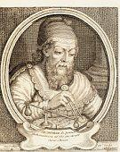

阿基米德


公元前287年，阿基米德诞生于希腊西西里岛叙拉古附近的一个小村庄，他出生于贵族，与叙拉古的赫农王（King Hieron）有亲戚关系，家庭十分富有。阿基米德的父亲是天文学家兼数学家，学识渊博，为人谦逊。阿基米德的意思是大思想家，阿基米德受家庭的影响，从小就对数学、天文学特别是古希腊的几何学产生了浓厚的兴趣。
阿基米德出生时，在当时古希腊的辉煌文化已经逐渐衰退，经济、文化中心逐渐转移到埃及的亚历山大城；但是另一方面，意大利半岛上新兴的罗马共和国，也正不断的扩张势力；北非也有新的国家迦太基兴起。阿基米德就是生长在这种新旧势力交替的时代，而叙拉古城也就成为许多势力的角斗场所。
返回顶部公元267年，也就是阿基米德十一岁时，阿基米德被父亲送到埃及的亚历山大城跟随欧几里得的学生埃拉托塞和卡农学习。亚历山大城位于尼罗河口，是当时世界的知识、文化贸易中心，学者云集，人才荟萃，被世人誉为“智慧之都”。举凡文学、数学、天文学、医学的研究都很发达。
阿基米德在亚历山大跟随过许多著名的数学家学习，包括有名的几何学大师—欧几里德，阿基米德在这里学习和生活了许多年，他兼收并蓄了东方和古希腊的优秀文化遗产，对其后的科学生涯中作出了重大的影响，奠定了阿基米德日后从事科学研究的基础。
返回顶部公元前218年罗马帝国与北非迦太基帝国爆发了第二次布匿战争。身处西西里岛的叙拉古一直都是投靠罗马，但是公元前216年迦太基大败罗马军队，叙拉古的新国王（海维隆二世的孙子继任），立即见风转舵与迦太基结盟，罗马帝国于是派马塞拉斯将军领军从海路和陆路同时进攻叙拉古。
叙拉古和罗马帝国之间发生战争，是在阿基米德年老的时候，罗马军队的最高统帅马塞拉斯率领罗马军队包围了他所居住的城市，还占领了海港。阿基米德虽不赞成战争，但又不得不尽自己的责任，保卫自己的祖国。阿基米德眼见国土危急，护国的责任感促使他奋起抗敌，于是阿基米德绞尽脑汁，日以继夜的发明御敌武器。
阿基米德利用杠杆原理制造了一种叫作石弩的抛石机，能把大石块投向罗马军队的战舰，或者使用发射机把矛和石块射向罗马士兵，凡是靠近城墙的敌人，都难逃他的飞石或标枪······阿基米德还发明了多种武器，来阻挡罗马军队的前进。根据一些年代较晚的记载，当时他造了巨大的起重机，可以将敌人的战舰吊到半空中，然后重重地摔下使战舰在水面上粉碎。
有一天叙拉古城遭到了罗马军队的偷袭，而叙拉古城的青壮年和士兵们都上前线去了，城里只剩下了老人、妇女和孩子，处于万分危急的时刻。就在这时，阿基米德为了自己的祖国站了出来。
阿基米德让妇女和孩子们每人都拿出自己家中的镜子一齐来到海岸边，让镜子把强烈的阳光反射到敌舰的主帆上，千百面镜子的反光聚集在船帆的一点上，船帆燃烧起来了，火势趁着风力，越烧越旺，罗马人不知底细，以为阿基米德又发明了新武器。就慌慌张张地逃跑了。
这些武器弄的罗马军队惊慌失措、人人害怕，连将军马塞拉斯都苦笑承认：“这是一场罗马舰队与阿基米德一人的战争”、“阿基米德是神话中的百手巨人”。
返回顶部公元前212年，古罗马军队入侵叙拉古，阿基米德被罗马士兵杀死，终年七十五岁。阿基米德的遗体葬在西西里岛，墓碑上刻着一个圆柱内切球的图形，以纪念他在几何学上的卓越贡献。
版本一：罗马士兵闯入阿基米德的住宅，看见一位老人在地上埋头作几何图形，阿基米德对士兵说你们等一等再杀我，我不能给世人留下不完整的公式！还没等他说完，士兵就杀了他。他是带着遗憾死去的。
版本二：一个罗马士兵突然出现在他面前，命令他到马塞拉斯那里去，遭到阿基米德的严词拒绝，于是阿基米德不幸死在了这个士兵的刀剑之下。
版本三：阿基米德坐在残缺的石墙旁边，正在沙地上画着一个几何图形。一个罗马士兵命令阿基米德离开，他傲慢地做了个手势说：“别把我的圆弄坏了！”罗马士兵勃然大怒，马上用刀一刺，就杀死了这位古代科学家阿基米德。
版本四：罗马士兵闯入了阿基米德的住宅，看见一位老人正在自家宅前的地上画图研究几何问题，阿基米德说：“走开，别动我的图！”战士一听十分生气，于是拔出刀来，朝阿基米德身上刺下去。
无论阿基米德是怎么死的，最为惋惜的就是那位罗马军队的统帅马塞拉斯，马塞拉斯将杀死阿基米德的士兵当作杀人犯予以处决，他为阿基米德举行了隆重的葬礼，并为阿基米德修建了一座陵墓，在墓碑上根据阿基米德生前的遗愿，刻上了"圆柱内切球"这一几何图形。
返回顶部